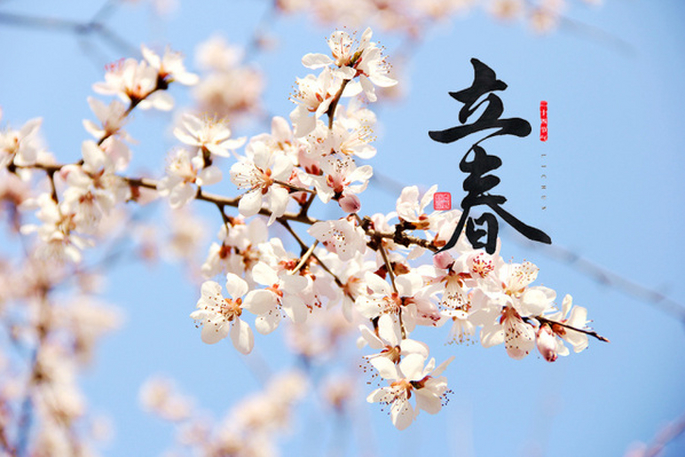
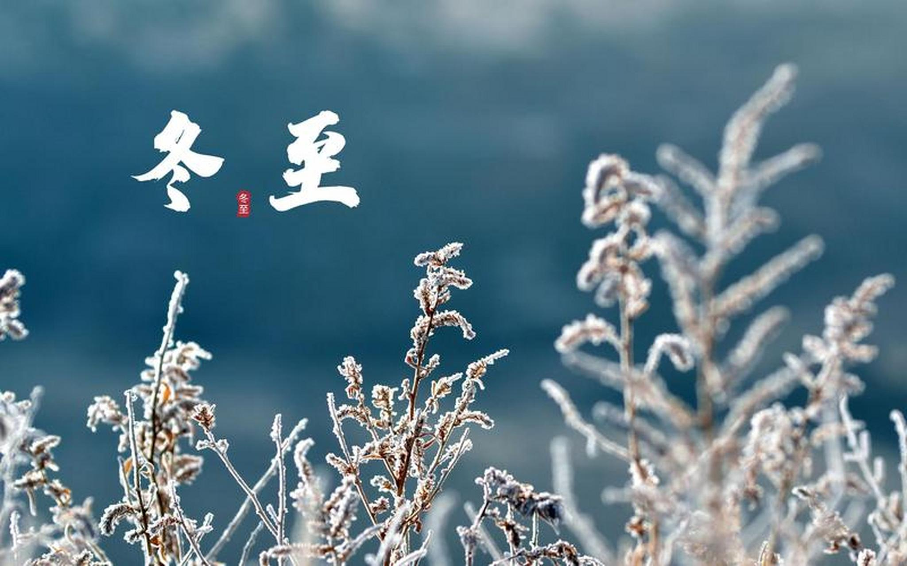

中国二十四节气——立春，冬至的习俗与气候
The customs and climate of the Beginning of Spring and the Winter Solstice, two of the Twenty-four Solar Terms in China.
立春的习俗与气候The customs and climate of the Beginning of Spring
立春的气候（Climate of the Beginning of Spring）
立春是二十四节气中的第一个节气，标志着春季的开始。此时，虽然北半球的日照时间逐渐增长，气温也开始缓慢回升，但冷空气活动仍较为频繁，天气乍暖还寒，呈现出冷暖交替的特点。在北方，大地尚未完全解冻，仍然比较寒冷，有时还会有降雪天气；而在南方，气温回升相对较快，空气湿度逐渐增加，早有春的气息，一些地区可能已经开始出现春雷和春雨。 The Beginning of Spring is the first solar term among the twenty - four solar terms, marking the beginning of spring. At this time, although the sunshine hours in the northern hemisphere gradually increase and the temperature also begins to rise slowly, the cold air activities are still relatively frequent, and the weather is still changeable, showing the characteristics of alternating cold and warm. In the north, the ground has not completely thawed and it is still quite cold, and there may still be snowfall sometimes. In the south, the temperature rises relatively fast, the air humidity gradually increases, and there is already the breath of spring. In some areas, the spring thunder and spring rain may have already appeared.
立春的习俗（Customs of the Beginning of Spring）
迎春：这是立春最重要的习俗之一。人们会举行盛大的迎春仪式，迎接春天的到来。在古代，皇帝会率领文武百官到东郊去祭祀迎春，祈求风调雨顺、五谷丰登。民间也会组织各种迎春活动，如舞龙、舞狮、踩高跷等，以表达对春天的期盼和喜悦之情。 Spring Welcoming: This is one of the most important customs of the Beginning of Spring. People will hold grand spring - welcoming ceremonies to welcome the arrival of spring. In ancient times, the emperor would lead all the civil and military officials to the eastern suburbs to offer sacrifices to welcome spring, praying for favorable weather and a bumper harvest. Various spring - welcoming activities will also be organized among the people, such as dragon dances, lion dances, stilt - walking, etc., to express the anticipation and joy for spring.
咬春：立春时，人们会吃一些新鲜的蔬菜和水果，如萝卜、春饼、春卷等，谓之 “咬春”。吃萝卜据说可以解春困，而春饼和春卷则象征着迎接春天的美好寓意。这些食物不仅美味可口，还具有一定的养生保健作用。 Spring Biting: At the Beginning of Spring, people will eat some fresh vegetables and fruits, such as radishes, spring cakes, spring rolls, etc., which is called "Spring Biting". Eating radishes is said to relieve spring fatigue, while spring cakes and spring rolls symbolize the beautiful meaning of welcoming spring. These foods are not only delicious but also have certain health - care effects.
打春牛：这是一种古老的习俗，寓意着鞭策耕牛，辛勤劳作，迎接丰收。人们会用彩鞭鞭打用泥土塑成的春牛，或制作纸牛，然后将其打破，象征着驱走寒气，迎接春天的到来。有些地方还会将春牛肚子里的五谷杂粮分发给百姓，寓意着五谷丰登。 Spring Ox - Beating: This is an ancient custom, which implies urging the farm cattle to work hard and welcome the harvest. People will whip the clay - made spring ox with colorful whips, or make paper oxen and then break them, symbolizing driving away the cold air and welcoming the arrival of spring. In some places, the grains and miscellaneous grains in the belly of the spring ox will be distributed to the people, implying a bumper grain harvest.
冬至的气候和习俗Climate of the Winter Solstice
冬至的气候（Climate of the Winter Solstice）
吃饺子：这是冬至最具代表性的习俗之一。在北方地区，家家户户在冬至这天都会包饺子吃。相传医圣张仲景在冬至返乡时，看到百姓耳朵被冻伤，便用羊肉和驱寒药材包成饺子形状的“娇耳”给百姓吃，治好了他们的耳朵。此后，冬至吃饺子以防止耳朵被冻的习俗便流传开来。如今，饺子的馅料丰富多样，一家人围坐在一起包饺子、吃饺子，充满了温馨的节日氛围。 Eating Dumplings: This is one of the most representative customs of the Winter Solstice. In northern regions, every household makes and eats dumplings on this day. It is said that Zhang Zhongjing, a famous doctor in ancient times, saw people's ears frostbitten when he returned to his hometown on the Winter Solstice. He made dumplings filled with mutton and cold - dispelling herbs, which he called "Jiao'er", to treat the people's ears. Since then, the custom of eating dumplings on the Winter Solstice to prevent ears from getting frostbitten has been passed down. Nowadays, dumplings come in a wide variety of fillings. Families sit together to make and eat dumplings, creating a warm and festive atmosphere.
吃汤圆：在南方，冬至吃汤圆是一项重要的传统。汤圆，又称“冬至团”，“圆”有“团圆”“圆满”之意。冬至吃汤圆，象征着家庭团圆、生活美满。人们会精心制作各种口味的汤圆，有芝麻馅、豆沙馅等，不仅口感软糯香甜，更寄托了人们对美好生活的向往和祝福。 Eating Tangyuan: In the south, eating tangyuan on the Winter Solstice is an important tradition. Tangyuan, also known as "Winter Solstice Balls", and the character "yuan" means "reunion" and "perfection". Eating tangyuan on the Winter Solstice symbolizes family reunion and a happy life. People carefully make tangyuan of various flavors, such as sesame - filled and red - bean - paste - filled ones. They are not only soft, glutinous and sweet in taste but also express people's yearning for and blessings on a better life.
祭天祭祖：冬至是阴阳二气自然转化的时刻，被视为上天赐予的福泽。在古代，冬至这天皇帝会前往郊外举行盛大的祭天大典，祈求来年风调雨顺、国泰民安。而民间百姓则会在家中向祖先牌位祭拜，缅怀先人，祈求祖先庇佑家族平安、子孙兴旺。这一习俗体现了人们对天地自然的敬畏以及对家族传承的重视。 Offering Sacrifices to Heaven and Ancestors: The Winter Solstice is a time when the yin and yang qi naturally transform, which is regarded as a blessing from heaven. In ancient times, the emperor would go to the outskirts to hold a grand ceremony to offer sacrifices to heaven, praying for favorable weather and national peace in the coming year. Among the common people, they would offer sacrifices to the memorial tablets of their ancestors at home, remembering the deceased and praying for the ancestors' protection of the family's safety and the prosperity of future generations. This custom reflects people's respect for nature and the importance they attach to family inheritance.
总体介绍
二十四节气的起源.html